TEACHINGS
Great teachers never stop learning
CSE435: Software Engineering
7 semesters
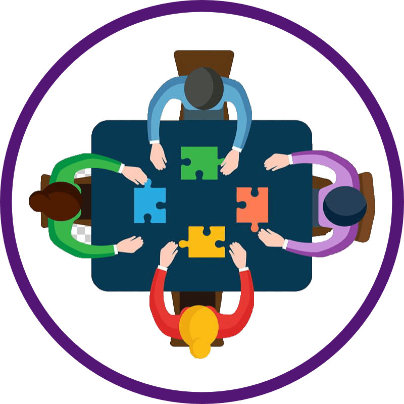
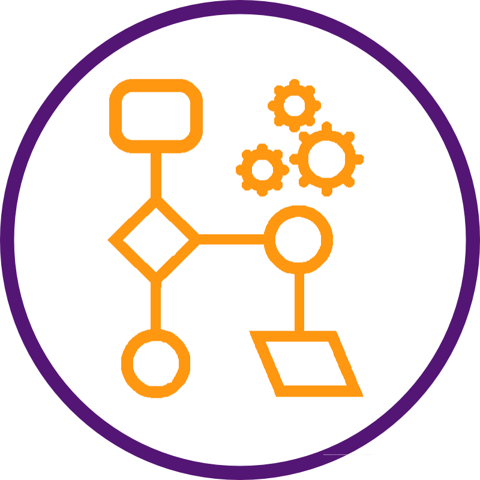
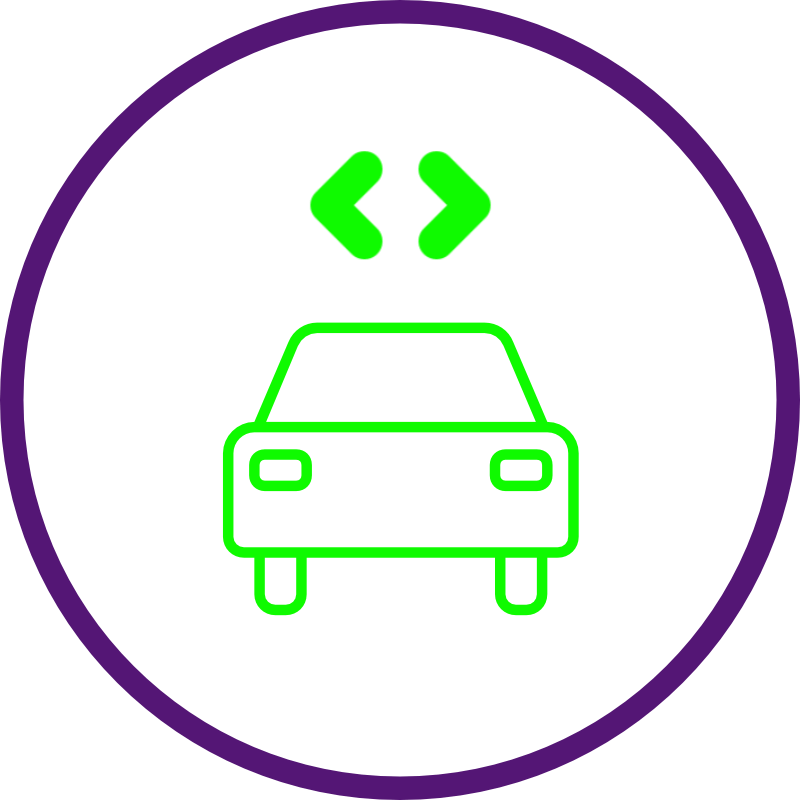
CSE435 teaches students the importance of structured software engineering. For many students, this course is the first to address / discuss safety-critical systems and the dangers of poor software. We discuss the large number of stakeholders in software engineering. We teach software process models such as waterfall, V-model, Spiral model, Agile, etc., with an emphasis on verification and validation of the software product. Furthermore, we teach a number of diagram notations (e.g., class models, sequence diagrams, state diagrams, use-case diagrams, etc.) from the Uniform Modelling Language. During each semester, students are given a real-world safety-critical project from our industrial collaborators, including adaptive cruise control systems, hands free driving systems, lane management systems, etc. They develop a Software Requirements Specification (SRS) document, design / implement a prototype, and present their work for our industrial collaborators!
Tutoring
2015-Present
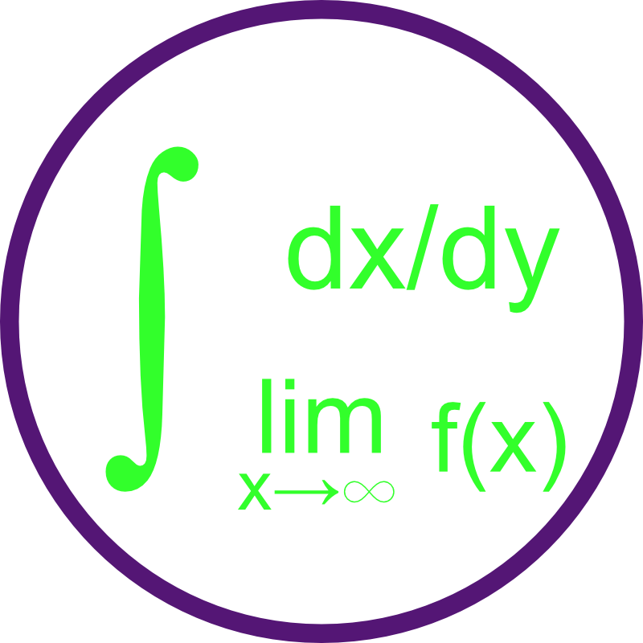
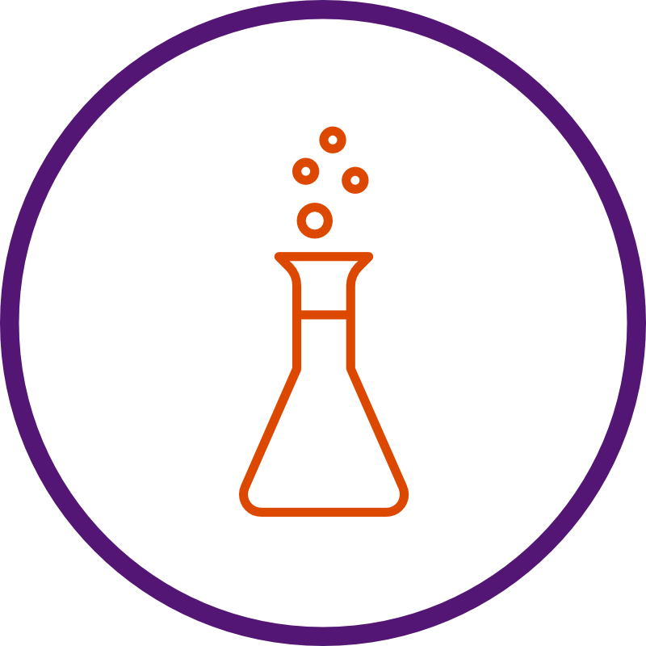
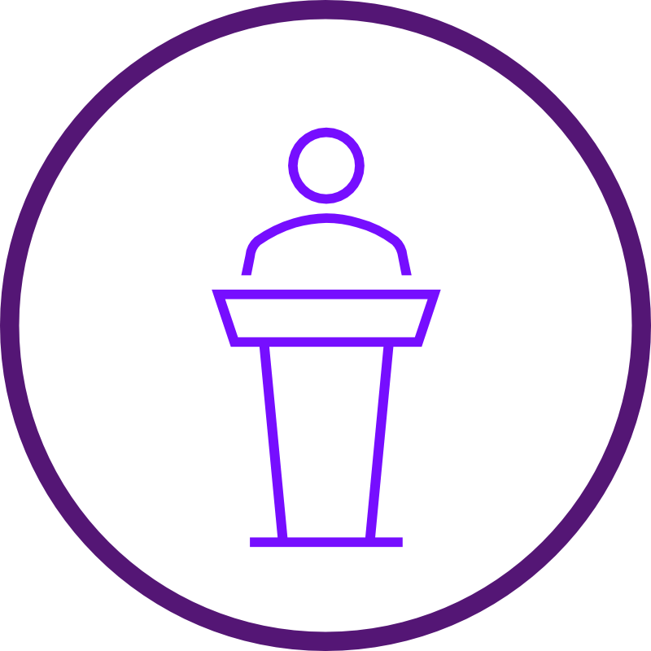
"In learning you will teach, and in teaching you will learn" - Phil Collins. I strongly believe that a good teacher is one who is always looking to learn and share their knowledge with others. As part of my devotion to the growth of knowledge, I have been voluntary mentoring / tutoring a number of students since 2015 for a wide range of STEM related subjects. They include, but are not limited to Calculus, statistics, linear algebra, data, machine learning, Software Engineering, chemistry, etc. I take high-level and complex concepts and break them down into easily understandable concepts, connecting the dots for my students.
CSE477: Web Development
2 semesters
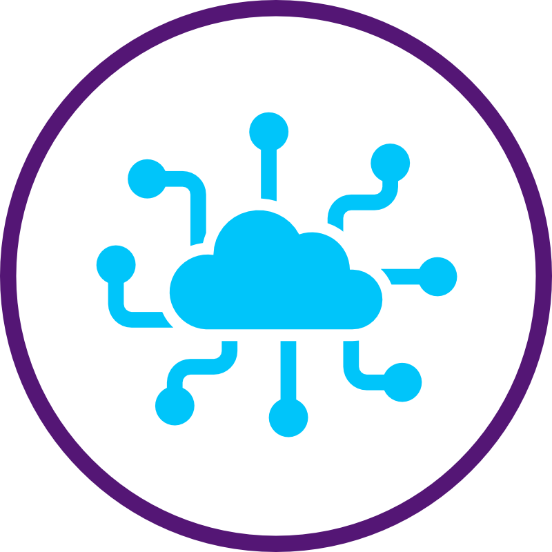

CSE477 teaches students Web Development and important patterns used. We teach students the basics of web development, including html, css, javascript. In the latter half of the semester, we introduce frameworks such as Vue, Flask, and Jinja. Some important design patterns we teach include Model View Controller (MVC), data access patterns, proper database management, and password encryptions.
CSE476: Mobile Application Development
1 semesters
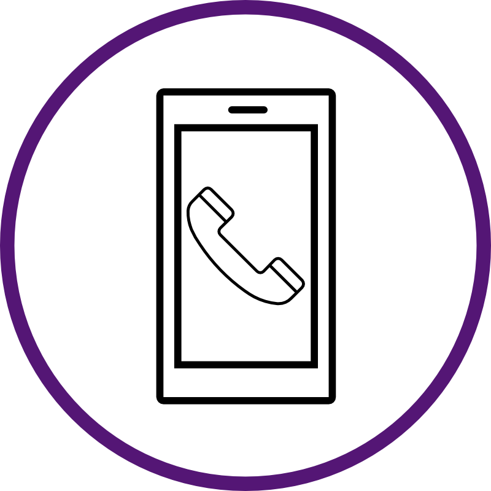
CSE476 teaches students Mobile Application Development. Specifically, CSE476 teaches mobile application development using the Android platform. We introduce unique requirements and methodologies for developing client-server applications for smartphones, tablets, and other mobile devices. For many students, this is the first hands-on experience they get with developing a full fledged application!
CSE260: Discrete Structures
2 semesters
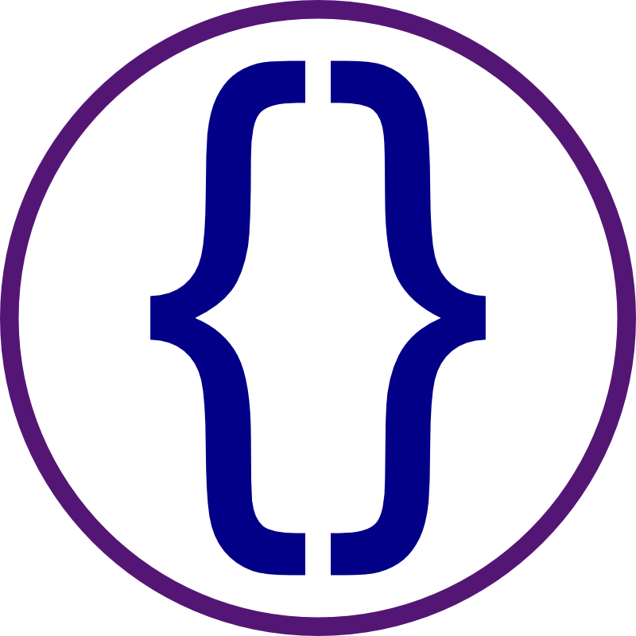
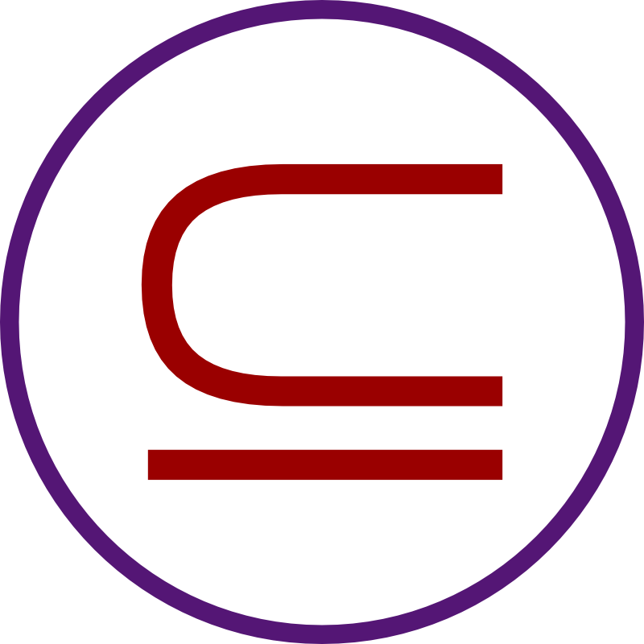
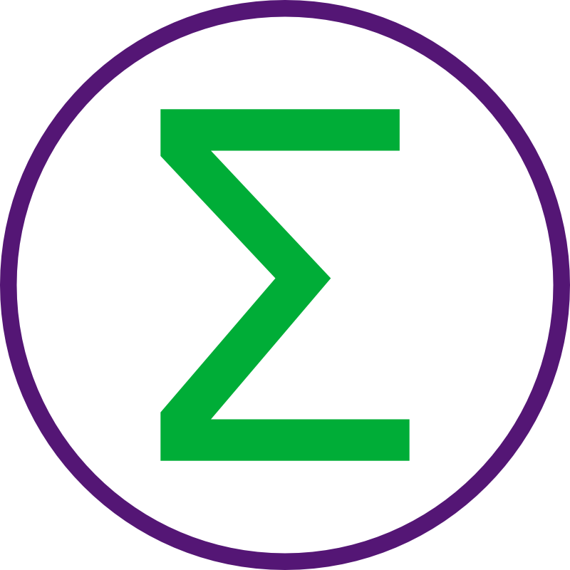
CSE260 teaches students the foundations for students to understand programming concepts through discrete mathematics, propositional and first order logic, equivalence, and methods of proofs. We also teach basic set theories, relations, functions, and discrete probabilities.
CSE335: Object-oriented Design
1 semesters
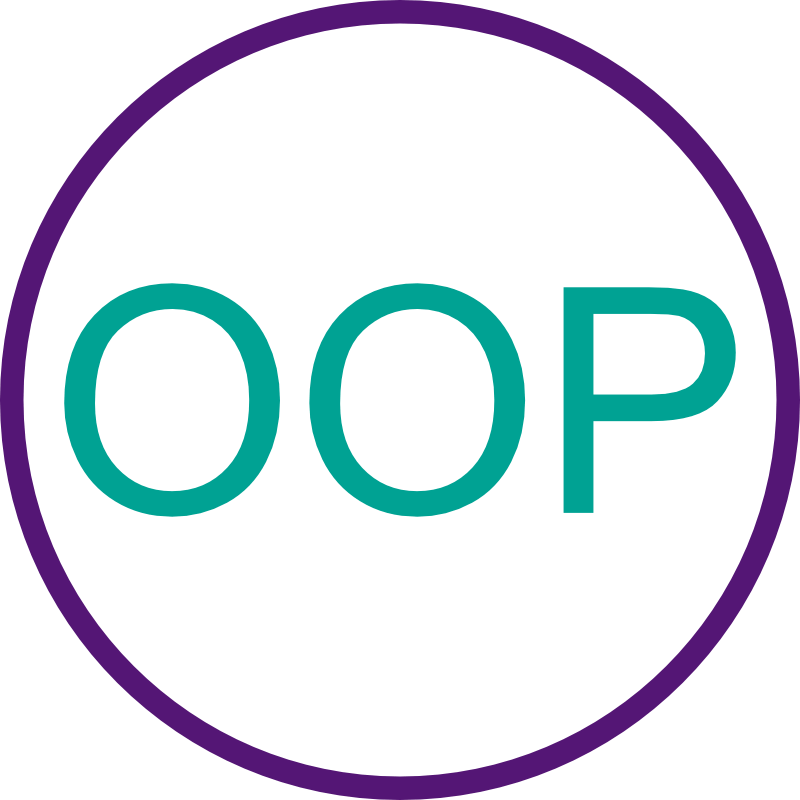
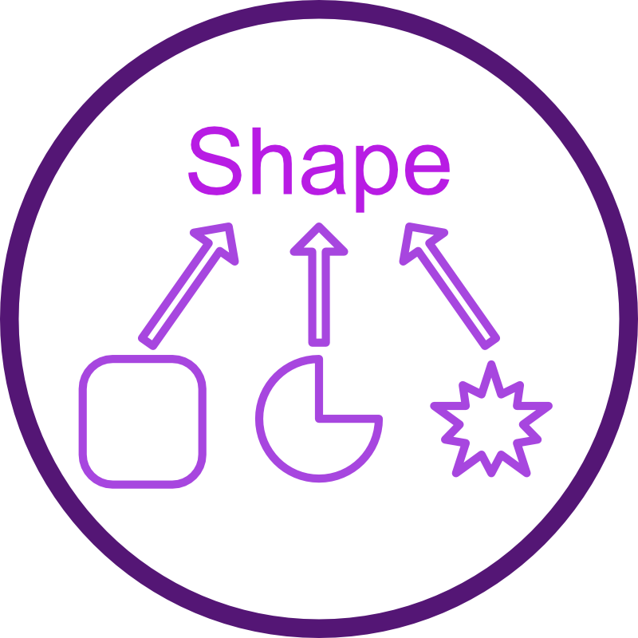
CSE335 teaches students the importance of Object-oriented Programming. This class is taught using C++. Students first design their class structure using a Class Diagram from the UML language. They learn about the importance of reliability, reusability, maintainability, and ease of extension. They then implement their respective projects using object orientation.
Selected Guest Lecture Recordings
Knowledge spreads like a wildfire
Introduction on Deep Learning
Guest Lecture for CSE435 11/22/2023
Introduction to Computer Security (part 1)
Guest Lecture for CSE435 11/15/2021
Introduction to Computer Security (part 2)
Guest Lecture for CSE435 11/15/2021